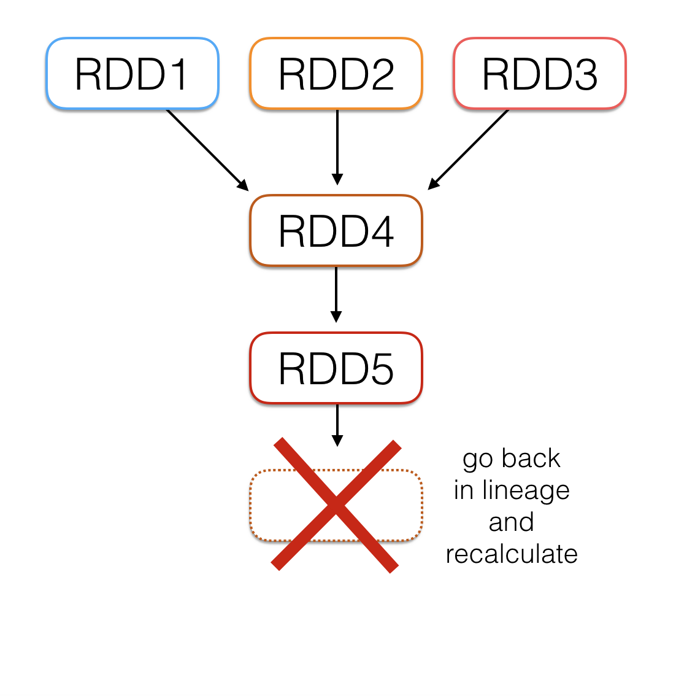
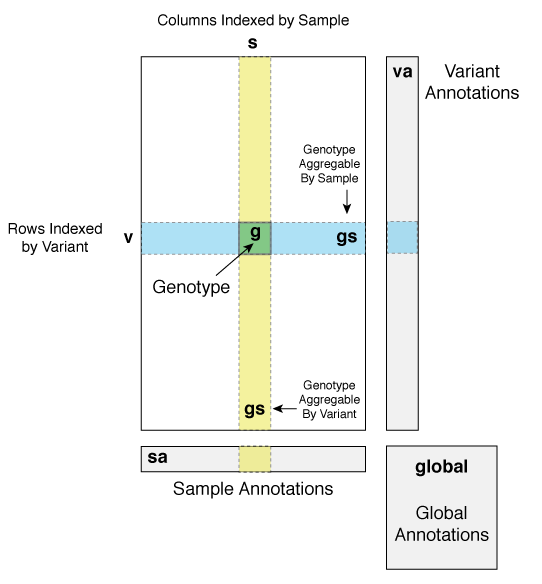
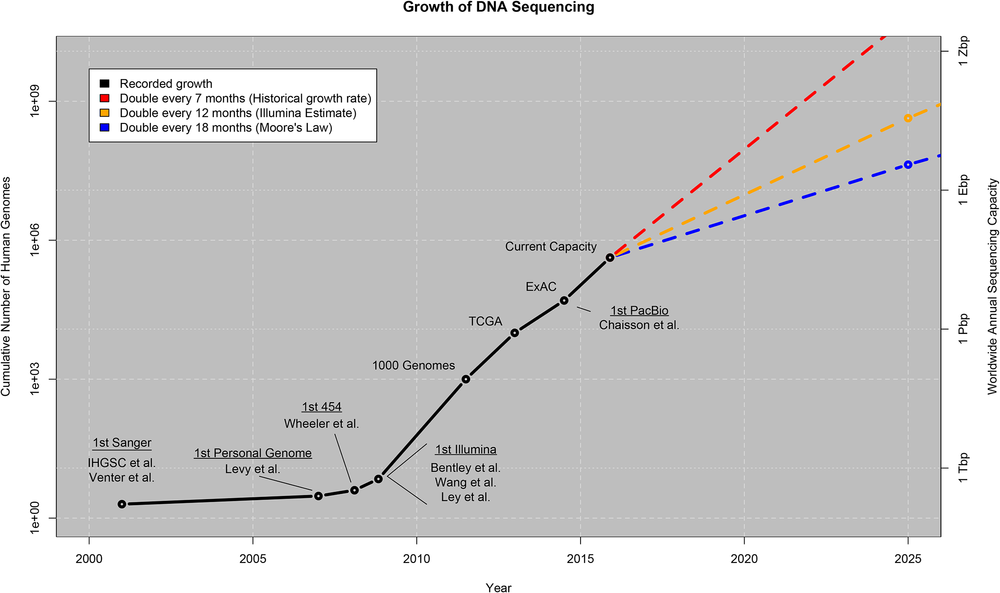
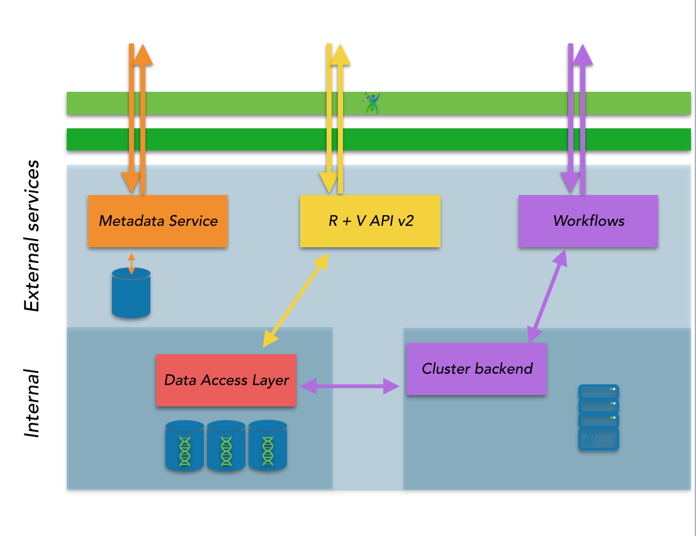

name: title layout: true class: center, middle, title --- count: false # Dispatches from the Convergence Coalface: ## HPC, Big Data, and Large Scale Genomics Jonathan Dursi<br/> Senior Research Associate<br/> Centre for Computational Medicine<br/> The Hospital for Sick Children<br/> https://github.com/ljdursi/IACS-SBU-2018 --- name: my-background-1 layout: false .left-column[ ## Who Am I? ### Old HPC Hand... ] .right-column[ Been doing this work for a while... ] --- name: my-background-1 layout: false .left-column[ ## Who Am I? ### Old HPC Hand... ] .right-column[ * Ex-astrophysicist turned large-scale computing. * Large-scale high-speed adaptive reactive fluid fluids - DOE ASCI Center at Chicago * FORTRAN, MPI, Oct-tree regular adaptive mesh * Joined HPC centre after postdoc - OpenMP, CUDA, C++ * Worked with researchers on wide variety of problems ] --- .left-column[ ## Who Am I? ### Old HPC Hand... ### Living in Exciting Times... ] .right-column[ Started my career (c1995-2005) when large scale scientific computing was: * ~20 years of stability * Bunch of x86, MPI, ethernet or infiniband * No one outside of academia was much doing big number/data crunching * Pretty stable set of problems ] --- ## Ye Olde Entire Scientific Computing Worlde, c. 2002 .center[</img>] (map from http://mewo2.com/notes/terrain/) --- ## Ye Olde Entire Scientific Computing Worlde, c. 2002 </img> It was a simpler time: * Statistial Computing largely the domain of the social sciences, some experimental sciences - R was beginning to be quite popular * Physical scientists working with Big Iron or workstations, performing simulation or analysis of comparitively regular data sets - FORTRAN/C/C++(?) + MPI + OpenMP - MATLAB, IDL - Python (Numeric) * Not a lot of SQL/database work in traditional technical computing, but communications up and downstream w/ statistical computing * Maybe infrequent ferry service between statistical computing and MATLAB communities --- ## And Then They Came, c. 2007 .center[</img>] --- ## And Then They Came, c. 2007 .center[</img>] Widespread adption of computing and networking brought *data*, and lot of it. * “Internet-scale” companies were the first businesses to try taking advantage of all their data, but others soon followed - Hadoop, HDFS spawned an entire ecosystem * In the sciences, genomics was in the right place at right time - Success of Human Genome Project in 2003 - High-throughput sequencing technologies becoming available - Lots and lots of data - but how to process it? - Arrived after traditional HPC was quite mature, optimized for its problems. - “Big Data” was just starting to develop tools, techniques --- name: my-background-2 layout: false .left-column[ ## Who Am I? ### Old HPC Hand... ### Living in Exciting Times... ### Gone Into Genomics ] .right-column[ Started looking into Genomics in ~2013: - Large computing needs - Very interesting algorithmic challenges - HPCer to the rescue, right? Made move in 2014 - Ontario Institute for Cancer Research - Working with Jared Simpson, author of ABySS (amongst other things) - First open-source human-scale de novo genome assembler - MPI-based ] -- .right-column-cont[ - ABySS 2.0 just came out, with a new non-MPI mode ] --- name: my-background-2 layout: false .left-column[ ## Who Am I? ### Old HPC Hand... ### Living in Exciting Times... ### Gone Into Genomics ] .right-column[ In the meantime, one of the de-facto standards for genome analysis, GATK, has just announced that version 4 will support distributed-memory cluster computing — using Apache Spark. .center[</img>] ] --- ## The Present Day, 2018 .center[<img src="assets/img/ScientificComputing2017.png" width=75%></img>] --- ## Genomics is starting to form a bridge between the two solitudes <img src="assets/img/ScientificComputing2017.png" width=33% style="float: right;"></img> * Data, not simulation, intensive - Truly large amounts of data - Irregular data lookups: complex graphs, indices - Looks more like NoSQL databases, social networks than PDEs on regular grids * But fundamentally science - Extremely subtle analyses - Asking questions that haven't been asked before - Testing, discovery of methods, means scale _down_ vital --- ## Genomics is starting to form a bridge between the two solitudes <img src="assets/img/ScientificComputing2017.png" width=33% style="float: right;"></img> * Genomics moving much faster than HPC, somewhat faster than Big Data in building the bridge - Immediate needs * HPC: “convergence” around exascale - Future looking * Big Data: re-learning HPC lessons as needed - Individual projects adopt either better single-node performance or distributed memory performance - Genomics needs both -- * It's going to take people with knowledge of lots of different parts of computational science to make this happen - To help with genomics research _now_ - To help transfer expertise between HPC and Big Data * And it will take places like this that bring those people together! --- layout: false .left-column[ ## Outline ] .right-column[ * Why HPC/Big Data convergence is inevitible - HPC: Decreasing regularity at scale - Big Data: Increasing performance needs * Genomics as a driver - Data volumes - Data types - Immediate needs * A tour of partly hybrid genomics projects - Pan-Cancer Analysis of Whole Genomes - Nanopore sequencing - CanDIG (http://www.distributedgenomics.ca) * Near-term large-scale genomics futures ] --- layout: false count: false class: center, middle, inverse ## HPC / Big Data Convergence --- ## Convergence Ahead </img> Because HPC and Big Data started in different places and are on different paths, convergence is inevitable: * Simulations are getting more complex, dynamic * Big data problems have long been in-memory, increasingly complex compute But the underlying problems are more or less the same! --- .left-column[ ## Convergence Ahead ### HPC's path ] .right-column[ HPCs path over the last ~20 years has largely been about scale * Scaling up simulations * Story mainly about hardware * Fundamental software stack largely unchanged - (though adoption of directive-based approaches for accelerators suggests some willingess to adopt new approaches when they are compelling enough - OpenMP/OpenACC/OpenUH..) </img> ] --- .left-column[ ## Convergence Ahead ### HPC's path ### Big Data's path ] .right-column[ Big Data's path over the past ~10 years has always taken compute/data at scale as a given * Scaling up complexity of calculations * Story mainly about software stack * Fundamental approach to hardware largely unchanged - (although, again, adoption of accelerators for some use cases) <img src="assets/img/convergence-bigdata-better.png" width=75% style="float: center;"></img> ] --- .left-column[ ## Convergence Ahead ### HPC's path ### Big Data's path ### Similar problems ] .right-column[ Big Data problems same as HPC, if in different context - Large scale network problems - Graph operations - Similarity computations, clustering, optimization, - Linear algebra - Tree methods - Time series - FFTs, smoothing, ... ] --- .left-column[ ## Convergence Ahead ### HPC's path ### Big Data's path ### Similar problems #### Linear algebra ] .right-column[ Almost any sort of numeric computation requires linear algebra. In many big-data applications, the linear algebra is _extremely_ sparse and unstructured; say doing similarity calculations of documents, using a bag-of-words model. If looking at ngrams, cardinality can be enormous, no real pattern to sparsity .center[<img src="assets/img/bag-of-words.png" width="75%"></img>] ] --- .left-column[ ## Convergence Ahead ### HPC's path ### Big Data's path ### Similar problems #### Linear algebra #### Graph problems ] .right-column[ As with other problems - big data graphs are like HPC graphs, but more so. Very sparse, very irregular: nodes can have enormously varying degrees, _e.g._ social graphs .center[<img src="assets/img/social-graph.png" width=75%></img>] https://en.wikipedia.org/wiki/Social_graph ] --- .left-column[ ## Convergence Ahead ### HPC's path ### Big Data's path ### Similar problems #### Linear algebra #### Graph problems ] .right-column[ Generally decomposed in similar ways. Processing looks very much like neighbour exchange on an unstructured mesh; can map unstructured mesh computations onto (very regular) graph problems. .center[<img src="assets/img/flink-sssp.png" width=75%></img>] https://flink.apache.org/news/2015/08/24/introducing-flink-gelly.html ] --- .left-column[ ## Convergence Ahead ### HPC's path ### Big Data's path ### Similar problems #### Linear algebra #### Graph problems ] .right-column[ Calculations on (_e.g._) social graphs are typically very low-compute intensity: - Sum - Min/Max/Mean So that big-data graph computations are often _more_ latency sensitive than more compute-intensive technical computations ⇒ lots of work done and in progress to reduce communication/framework overhead .center[<img src="assets/img/graphx-tables_and_graphs.png" width=75%></img>] https://spark.apache.org/docs/1.2.1/graphx-programming-guide.html ] --- .left-column[ ## Convergence ### HPC Side ] .right-column[ The problems big-data practitioners face are either: * The same as in traditional HPC * The same as new scientific computing fields * Or what data analysis/HPC will be facing towards exascale - Less regular/structured - More dynamic * This is starting to be recognized in HPC, much talk of “HPC/HPDA convergence”. ] -- .right-column-cont[ Lots of whitepapers and vendor press releases... .center[</img>] ] --- .left-column[ ## Convergence ### HPC Side ### Dataflow ] .right-column[ Interesting work going on, but largely aimed at “for exascale” at some time in the future; genomics could use these now! Dataflow starting to attract attention in HPC, e.g. [PaRSEC at ICL](http://icl.utk.edu/parsec/): <img src="assets/img/parsec-toolchain.png" width=45%></img> <img src="assets/img/parsec-QR.png" width=40%></img> Describe the flow of data, but leave execution plan to compilation, runtime Make use of compilers, runtimes to more effectively parallelize complex data access patterns Tool for abstracting away architecture: performance portability ] --- .left-column[ ## Convergence ### HPC Side ### Dataflow ### Extended PGAS ] .right-column[ Interesting work going on, but largely aimed at “for exascale” at some time in the future; genomics could use these now! Extended memory-hierarchy PGAS langauges with very deep runtime stacks, like Legion .center[</img>] ] --- .left-column[ ## Convergence ### HPC Side ### Big Data Side ] .right-column[ The Big Data community thinks in terms of improving performance, not really in terms of “converging” with anything else. ] -- .right-column-cont[ To the extent that Big Data thinks of HPC at all, not as a source of inspiration or innovation. .center[<img src="assets/img/hpc-doesnt-care-what-you-think.png" width=100%></img>] [Slide from [talk](https://www.slideshare.net/DataScienceAssociati/using-ai-to-tackle-the-future-of-health-care-data) by Brian Dolan, Deep6 AI] ] --- .left-column[ ## Convergence ### HPC Side ### Big Data Side ] .right-column[ The innovations on the Big Data side come from databases and from machine learning. Databases: * Fast (100 μs or better) irregular distributed data access * Lean heavily on hardware knowledge Machine learning: * More tightly coupled iterative computing * Lean more on software design ] --- .left-column[ ## Convergence ### HPC Side ### Big Data Side #### Commodity H/W ] .right-column[ [ScyllaDB](https://www.scylladb.com): * Very careful (HPC-like) C++ tuned on-node implementation (http://seastar.io) - Tasks pinned to cores - Sharding - Lock-free data structures * User-space networking and ethernet library Data Plane Development Kit (DPDK: https://dpdk.org) - over 10M packets/sec .center[<img src="assets/img/scylladb.png" width=75%></img>] ] --- .left-column[ ## Convergence ### HPC Side ### Big Data Side #### Commodity H/W #### RDMA ] .right-column[ [FaRM](https://www.microsoft.com/en-us/research/publication/farm-fast-remote-memory/) from Microsoft Research: * RDMA + RPC * SSDs Uses RDMA on converged 40 GigE + SSDs to get ~30 μs latencies to 1.8TB of key-value data on disk over 20 machines at high load (8 million lookups/sec). .center[<img src="assets/img/farm-addressing.png" width=75%></img>] Image from the [FaRM USENIX paper](https://www.usenix.org/system/files/conference/nsdi14/nsdi14-paper-dragojevic.pdf) ] --- .left-column[ ## Convergence ### HPC Side ### Big Data Side #### Commodity H/W #### RDMA #### Spark ] .right-column[ Spark (2012) is in some ways “post-Hadoop”; it can happily interact with the Hadoop stack but doesn't require it. Built around concept of in-memory resilient distributed datasets * Tables of rows, distributed across the job, normally in-memory * Immutable * Restricted to certain transformations Used for database, machine learning (linear algebra, graph, tree methods), _etc._ .center[</img>] ] --- .left-column[ ## Convergence ### HPC Side ### Big Data Side #### Commodity H/W #### RDMA #### Spark ] .right-column[ <img src="assets/img/logistic-regression.png" width=33% style="float: right;"></img> Being in-memory was a huge performance win over Hadoop MapReduce for multiple passes through data. Spark immediately began supplanting MapReduce for complex calculations. Project Tungsten (2015) was an extensive rewriting of core Spark for performance. * Get rid of JVM memory management, handle it themselves (FORTRAN77 workspace arrays!) * Vastly improved cache performance * Code generation (more later) In 2016, built-in GPU support. ] --- layout: false .left-column[ ## Convergence ### HPC Side ### Big Data Side #### Commodity H/W #### RDMA #### Spark ] .right-column[ Spark fault-tolerant tables (RDDs, Resiliant Distributed Datasets) prove to be a very powerful abstraction. Can easily use join, _etc._ to bring all values associated with a key together: - Like all stencil terms that are contribute at a particular grid point .center[<img src="assets/img/spark-rdds-diffusion.png" width=55%></img>] Can build on dataframes for data analysis ] --- layout: false .left-column[ ## Convergence ### HPC Side ### Big Data Side #### Commodity H/W #### RDMA #### Spark ] .right-column[ Graph library — [GraphX](http://spark.apache.org/graphx/) — has also been implemented on top of RDDs. Many interesting features, but for us: [Pregel](http://blog.acolyer.org/2015/05/26/pregel-a-system-for-large-scale-graph-processing/)-like algorithms on graphs. Nodes passes messages to their neighbours along edges. <img src="assets/img/graphx.png" width=75%></img> ] --- .left-column[ ## Convergence ### HPC Side ### Big Data Side #### Commodity H/W #### RDMA #### Spark ] .right-column[ This makes implementing unstructured mesh methods extremely straightforward: ```scala def step(g:Graph[nodetype, edgetype]) : Graph[nodetype, edgetype] = { val terms = g.aggregateMessages[msgtype]( // Map triplet => { triplet.sendToSrc(src_msg(triplet.attr, triplet.srcAttr, triplet.dstAttr)) triplet.sendToDst(dest_msg(triplet.attr, triplet.srcAttr, triplet.dstAttr)) }, // Reduce (a, b) => (a._1, a._2, a._3 + b._3, a._4 + b._4, a._5 + b._5, a._6 + b._6, a._7 + b._7) ) val new_nodes = terms.mapValues((id, attr) => apply_update(id, attr)) return Graph(new_nodes, graph.edges) } ``` .center[<img src="assets/img/graphx-init.png" width=33%></img> <img src="assets/img/graphx-final.png" width=33%></img>] ] --- .left-column[ ## Convergence ### HPC Side ### Big Data Side #### Commodity H/W #### RDMA #### Spark #### TensorFlow ] .right-column[ <img src="assets/img/tensors_flowing.gif" width=33% style="float: right;"></img> Tensorflow: from Google, Nov 2015 * Computation with dataflow graphs * Data is always in the form of “tensors” (n-d arrays). * Deep learning and other machine learning tasks. * Lots of BLAS operations and function evaluations but also general numpy-type operations, can use GPUs or CPUs. Getting very close to traditional HPC problems ] --- .left-column[ ## Convergence ### HPC Side ### Big Data Side #### Commodity H/W #### RDMA #### Spark #### TensorFlow ] .right-column[ All sorts of computations on regular arrays can be performed. Some computations can be split across GPUs, or (eventually) even nodes. All are multi-threaded. .center[<img src="assets/img/tf_mandelbrot.png" width=75%>] ] --- .left-column[ ## Convergence ### HPC Side ### Big Data Side #### Commodity H/W #### RDMA #### Spark #### TensorFlow ] .right-column[ All sorts of computations on regular arrays can be performed. Some computations can be split across GPUs, or (eventually) even nodes. All are multi-threaded. .center[<img src="assets/img/tf_wave_eqn.png" width=75%>] ] --- .left-column[ ## Convergence ### HPC Side ### Big Data Side #### Commodity H/W #### RDMA #### Spark #### TensorFlow ] .right-column[ As with laying out the computations, distributing the computations is still quite manual: ```python with tf.device("/job:ps/task:0"): weights_1 = tf.Variable(...) biases_1 = tf.Variable(...) with tf.device("/job:ps/task:1"): weights_2 = tf.Variable(...) biases_2 = tf.Variable(...) with tf.device("/job:worker/task:7"): input, labels = ... layer_1 = tf.nn.relu(tf.matmul(input, weights_1) + biases_1) logits = tf.nn.relu(tf.matmul(layer_1, weights_2) + biases_2) # ... train_op = ... with tf.Session("grpc://worker7.example.com:2222") as sess: for _ in range(10000): sess.run(train_op) ``` Communications is done using [gRPC](http://www.grpc.io), a high-performance RPC library based on what Google uses internally. ] --- .left-column[ ## Convergence ### HPC Side ### Big Data Side ### Coming Together ] .right-column[ Reaching towards similar approaches: * Both sides now capable of fully taking advantage of hardware - CPU, but also memory, I/O, network - Accelerators * Dataflow as a model: - Taking advantage of modern compilers, runtimes - Tool for abstracting away architecture: performance portability * Higher level languages - Key set of performant distributed primitives - Can start slow and improve in performance * But no one toolset has all of the pieces ] --- layout: false count: false class: center, middle, inverse ## Genomics --- .left-column[ ## Genomics ### Computation types #### Search/Traversal ] .right-column[ One type of workload: very search heavy - indexes, graph operations, databases. Typified by assembly: * Have small fragments of sequence, must generate whole * Graph methods (de Bruijn or overlap graph) * Find maximal unambiguous paths through the graph <table width=65%> <tbody> <tr><td></img></td></tr> <tr><td>Figure from <a href="http://www.nature.com/nrg/journal/v14/n5/full/nrg3433.html">Nature Review Genetics</a></td></tr> </tbody> Or may have an assembled graph genome and try to find best match for given observed subsequence ] --- .left-column[ ## Genomics ### Computation types #### Search/Traversal ] .right-column[ One type of workload: very search heavy - indexes, graph operations, databases. Typified by assembly: * Have small fragments of sequence, must generate whole * Graph methods (de Bruijn or overlap graph) * Find maximal unambiguous paths through the graph <table width=65%> <tbody> <tr><td></img></td></tr> <tr><td><a href="https://www.nytimes.com/2016/03/31/us/mapping-a-genetic-strategy-to-fight-the-zika-virus.html">Team of Rival Scientists Comes Together to Fight Zika, New York Times, Mar 30 2016</a></td></tr> </tbody> Or may have an assembled graph genome and try to find best match for given observed subsequence ] --- .left-column[ ## Genomics ### Computation types #### Search #### Statistics ] .right-column[ Another is large biostatistical analyses: Imagine RNA sequence expression data: - 100m fragments of sequence (imperfect sampling) - Assigned to particular RNA transcripts - Find out if transcripts are differentially expressed between case and condition Now do that for multiple tissue types, large population... And start correlating with other information (DNA variants, clinical data, phenotypic data,...) <table width=45%> <tbody> <tr><td><img src="assets/img/rnaseq.png" width=90%></img></td></tr> <tr><td>Figure from <a href="http://www.nature.com/nbt/journal/v32/n9/full/nbt.2931.html">Nature</a></td></tr> </tbody> ] --- .left-column[ ## Genomics ### Computation types ### Toolsets ] .right-column[ So why doesn't genomics just use current HPC tool sets like MPI and OpenMP? ] -- .right-column-cont[ <table width=100%> <tbody> <tr><td></img></td></tr> <tr><td><b>Fig. 1</b>: aftermath of attempt to use current HPC toolsets like MPI and OpenMP</td></tr> <tr><td><a href="https://www.flickr.com/photos/elisfanclub/2909042744">https://www.flickr.com/photos/elisfanclub/2909042744</a></td></tr> </tbody> ] --- .left-column[ ## Genomics ### Computation types ### Toolsets ] .right-column[ So why doesn't genomics just use current HPC tool sets like MPI and OpenMP? Really designed for quite regular data access, SPMD. * `omp parallel for`, `MPI_Neighbor_allgather` - these aren't things that make sense here * There's a reason distributed databases (_e.g._) aren't written using these tools People do in fact try: * Abyss * [Ray](https://sourceforge.net/projects/denovoassembler/) And have somewhat more luck with PGAS tools * [HipMer](http://portal.nersc.gov/project/hipmer/) (UPC++) ] --- .left-column[ ## Genomics ### Computation types ### Toolsets ] .right-column[ So why doesn't genomics just use current Big Data tools like FaRM or SycllaDB? See Figure 1: * High-performance low-level pieces * No meaningful way to build into an application - standalone tool ] --- .left-column[ ## Genomics ### Computation types ### Toolsets ] .right-column[ So why doesn't genomics just use current Big Data tools like Spark? ] -- .right-column-cont[ <table width=100%> <tbody> <tr><td></img></td></tr> <tr><td><b>Fig. 2</b>: attempt to use current big data toolsets like Spark</td></tr> <tr><td><a href="https://pixabay.com/en/snail-slow-shell-mollusk-close-up-1844618/">https://pixabay.com/en/snail-slow-shell-mollusk-close-up-1844618/</a></td></tr> </tbody> ] --- .left-column[ ## Genomics ### Computation types ### Toolsets ] .right-column[ Too slow – especially at *small* scale! – even for the biostatistics work that it's well suited for * These tools are built assuming very large datasets * The nature of scientific work requires the tools to work at small scale first <table width=100%> <tbody> <tr><td></img></td></tr> <tr><td>From <a href="http://www.frankmcsherry.org/assets/COST.pdf">“Scalability - but at what COST?”</a>, McSherry, Isard, Murray (2015)</td></tr> </tbody> ] --- .left-column[ ## Genomics ### Computation types ### Toolsets ] .right-column[ </img> Here's where we are now - the Broad institute in Boston put together the [Hail project](https://www.hail.is/hail/overview.html#variant-dataset-vds): * Based on Spark * “does person X have genetic variant Y” matrix of records * Interactively query reductions of rows and columns * A big problem is several billion entries. Future proof, but... * This is not a hard problem! * Very unwieldly for individual researchers on smaller sets. ] --- .left-column[ ## Genomics ### Computation types ### Toolsets ] .right-column[ I claim those of us in the providing-parallel-computing-environments business have kind of failed Genomics so far. Large genomics today means buying or renting very large RAM machines. Good news: there's lots of great work algorithmic being done in the genomics community, including right here * Succinct data structures * Approximate (and exact) sketching and streaming methods Even so, common to have bioinformatics analyses held up waiting for access to large-memory machines And it's not going to get better... ] --- .left-column[ ## Genomics ### Computation types ### Toolsets ### Data volumes ] .right-column[ Genomic volumes currently doubling every 7-12 months Currently driven by research projects, on both human and model organisms .center[] (From [Stephens _et al_. (2015) “Big Data: Astronomical or Genomical?” PLoS Biol 13(7): e1002195](https://doi.org/10.1371/journal.pbio.1002195)) ] --- .left-column[ ## Genomics ### Computation types ### Toolsets ### Data volumes #### New devices ] .right-column[ This (IMHO) understates the near-term rate of change New devices are arriving which will move some sequencing from specialized core facilities to small labs (_c.f._ “killer micros”) .center[<img src="assets/img/MinION.jpg" width=40%> <img src="assets/img/sequencing-animated.gif" width=40%>] [Credit: [Oxford Nanopore](http://www.nanoporetech.com)] ] --- .left-column[ ## Genomics ### Computation types ### Toolsets ### Data volumes #### New devices #### New data types ] .right-column[ Entirely new data types are becoming available for the first time: * Direct RNA sequencing [Credit: [Oxford Nanopore](http://www.nanoporetech.com)] .center[] ] --- .left-column[ ## Genomics ### Computation types ### Toolsets ### Data volumes #### New devices #### New data types #### Genomic medicine ] .right-column[ And all of those changes in research genomics are going to be small potatoes compared to the real elephant in the room: genomic medicine. <table width=75%> <tbody> <tr><td><img src="assets/img/genomic-medicine.jpg" width=80%></td></tr> <tr><td>Figure from <a href="http://stm.sciencemag.org/content/5/189/189sr4.full">“Genomic Medicine: A Decade of Successes, Challenges, and Opportunities”, McCarthy, McLeod, and Ginsburg, (2013)</a></td></tr> </tbody> </table> Whole genome sequencing already starting to become part of the toolkit for diagnosing rare diseases, oncology ~$1000 is a lot for a test, but not unfathomable As becomes cheaper/easier/faster, will become standard of care for more and more cases And medicine is _huge_ - hospital spending alone is ~10x entire NIH budget ] --- .left-column[ ## Genomics ### Computation types ### Toolsets ### Data volumes ### New Analyses ] .right-column[ If it was just about doing larger numbers of the same analyses, Genomics would be in pretty good shape, computationally * Embarassingly parallel * Linear scaling with data * Need more resources, but just additional copies of the same resources ] -- .right-column[ But more data and better techniques make possible – make necessary – completely different kinds of analyses ] --- .left-column[ ## Genomics ### Computation types ### Toolsets ### Data volumes ### New Analyses #### Metagenomics ] .right-column[ Metagenomics – doing sequencing of an environmental sample, and putting together a census of microbes * Human health - Wounds - infection - Environment - pathogens, antibiotic resistance - Gut flora, skin, _etc._ * Environment - Waterways, etc - Looking for health of ecosystem <table width=75%> <tbody> <tr><td></td></tr> <tr><td><a href="https://twitter.com/erikgarrison/status/969560993922736128">https://twitter.com/erikgarrison/status/969560993922736128</a></td></tr> </tbody> </table> ] --- .left-column[ ## Genomics ### Computation types ### Toolsets ### Data volumes ### New Analyses #### Metagenomics ] .right-column[ Already complicated if one is looking for novel microbes, genes * Have to perform metagenomic assembly - don't even know how many types of critters you have Incredible diversity of microbes, wnat to be able to index and look up * Huge data sets Timeseries: * How do populations shift over time Very large data sets ] --- .left-column[ ## Genomics ### Computation types ### Toolsets ### Data volumes ### New Analyses #### Metagenomics #### Population genomics ] .right-column[ Current human genomics pipelines are based around a single human reference genome * But large amount of variation and diversity! * Especially in some genomic regions, e.g. those associated with immune system * Known differences between populations Prefer to have rather than a single linear reference, a graph which incorporates known variation * Tools becoming available * Creating these graphs (and their indices) is non trival, requires significant memory * Using the index will require more memory than currently <table width=75%> <tbody> <tr><td></td></tr> <tr><td>Paten B, <i>et al.</i> <a href="https://www.ncbi.nlm.nih.gov/pmc/articles/PMC5411762/">“Genome graphs and the evolution of genome inference”</a> Gen Res. (2017)</td></tr> </tbody> </table> ] --- .left-column[ ## Genomics ### Computation types ### Toolsets ### Data volumes ### New Analyses #### Metagenomics #### Population genomics #### RNA ] .right-column[ DNA is just the beginning - the recipe book that is read from during cell processes. <table width=75%> <tbody> <tr><td></td></tr> <tr><td><a href="http://www.gene-quantification.de">http://www.gene-quantification.de</a></td></tr> </tbody> </table> Each cell type expresses different levels of transcripts for genes, and often different forms of those transcripts Directly describes disease state ] --- .left-column[ ## Genomics ### Computation types ### Toolsets ### Data volumes ### New Analyses #### Metagenomics #### Population genomics #### RNA ] .right-column[ But now not one static genome for a patient – many, over time Much larger data sets, indexes. <table width=75%> <tbody> <tr><td></td></tr> <tr><td><a href="https://www.humancellatlas.org">https://www.humancellatlas.org</a></td></tr> </tbody> </table> Human Cell Atlas - billions of cells, RNA expression, imaging; petabytes of data ] --- layout: false count: false class: center, middle, inverse ## Projects --- .left-column[ ## Projects ] .right-column[ The approach to convergence so far in many genomics projects has been to “pick and choose” * Adopt HPC-like approaches within nodes - Very high performance threading, memory-use, careful with synchroniztion * And cloud/big-data approaches for orchestration - Cloud, workflow/dataflow - Data handling ] -- .right-column-cont[ Will talk about three projects, how they've straddled the HPC/Big Data divide, and what would be possible if the divide were narrower ] --- .left-column[ ## Projects ### PCAWG ] .right-column[ ### Pan-Cancer Analysis of Whole Genomes International effort * Consistent analysis of 2,778 paired tumour/normal sequenced whole genomes * ~30 cancer types * Dozens of projects </img> ] --- .left-column[ ## Projects ### PCAWG ] .right-column[ ### Pan-Cancer Analysis of Whole Genomes Cancers widely varying * Internal variation * Between-cancer variation Want to build a strong data basis for commonalities between cancers, particularlities to given types </img> </img> ] --- .left-column[ ## Projects ### PCAWG ] .right-column[ ### Pan-Cancer Analysis of Whole Genomes Substantial data legacy of clinical, genomic data </img> ] --- .left-column[ ## Projects ### PCAWG ] .right-column[ </img> Very complicated technical pipeline to get the final data set that cancer biologists could study. Orchestration work led by [Christina Yung](https://gdc.cancer.gov/about-gdc/gdc-team/christina-yung-phd), then OICR, now NIH NCI Genomic Data Commons, and [Brian O'Connor](https://www.soe.ucsc.edu/people/broconno) now at UCSC. Had to run this reliably, across many countries, datasets, and infrastructures — and be able to update! * Some raw data sets couldn't leave their respective countries ] --- .left-column[ ## Projects ### PCAWG ] .right-column[ ### Pan-Cancer Analysis of Whole Genomes “We are no longer in the age of Data, we are in the age of Process.” Vahan Simonyan - FDA ([ref](https://twitter.com/biocrusoe/status/977175159965700099)) </img> When orchestrating something of this scale, automation, observability, reproducibility key! Cloud/Big data frameworks made this much more approachable - would be even more so today ] --- .left-column[ ## Projects ### PCAWG ] .right-column[ ### Pan-Cancer Analysis of Whole Genomes Were big early adopters of Docker, with bioinformatics containers being deposited on [dockstore.org](http://www.dockstore.org) <img src="assets/img/dockstore.png" width=55% style="float: center"></img> Absolutely necessary to make sure that everyone was running same versions, could easily deploy updates Might use Singularity if started today? ] --- .left-column[ ## Projects ### PCAWG ] .right-column[ ### Pan-Cancer Analysis of Whole Genomes Cloud orchestration was much simpler than local clusters * Triggers * Robust dependencies * Monitoring </img> Today would probably use something like AWS Batch and container service to make it easier ] --- .left-column[ ## Projects ### PCAWG ] .right-column[ ### Pan-Cancer Analysis of Whole Genomes </img> My own part involved creating “gold” short somatic variant calls from the 4 callers that were run by that set of pipelines. </img> Selection of ~250,000 somatic variants for deep sequencing validation, build an ensemble model from the 4 core callers. Again, process matters! Automation, reproduciblity. ] --- .left-column[ ## Projects ### PCAWG ] .right-column[ ### Pan-Cancer Analysis of Whole Genomes Running would have been easier with lighter memory requirements, even if that meant more nodes Had problem with some structural variant callers in particular Would have been great to be able to do joint variant calling, simplified consensus calling methodology More memory requirements, issues with privacy ] --- .left-column[ ## Projects ### PCAWG ### Nanopore ] .right-column[ ### Nanopore sequencing .center[<img src="assets/img/sequencing-animated.gif" width=80%>] One of a handful of “3rd generation” sequencing technologies DNA is ratcheted through a pore by an engineered protein (similar to what is at work in transcription) Base interacts with pore, reduces current flow through ionic fluid in pore DNA sequencing becomes signal processing - with floating point values, even! ] --- .left-column[ ## Projects ### PCAWG ### Nanopore ] .right-column[ ### Nanopore sequencing Probabilistic model for base calls given the data .center[<img src="assets/img/nanopore-processing.png" width=60%>] Jared's lab put out first open-source widely available software for calling the base sequence - Allowed in-field base calling (until then, cloud-only) Very HPC-type techniques - efficient threading (OpenMP!), tuned lookup tables for logarithm calculations for liklihood, careful use of memory. Very noisy reads at individual bases (~80-90% accuracy) but extremely long reads (up to 1Mbp as vs 250bp) makes very exciting for many applications ] --- .left-column[ ## Projects ### PCAWG ### Nanopore ] .right-column[ ### Nanopore sequencing Field base calling - and accurate variant calling allowed in-field tracking of Zika and then Ebola outbreaks (http://nextstrain.org) .center[] Local “HPC” techinques allowed use of resource-constrained local compute Cloud/web tools for the near real-time tracking ] --- .left-column[ ## Projects ### PCAWG ### Nanopore ] .right-column[ ### Methylation Approach very similar to variant calling allows identification of base modifications .center[] Trained model to find metylation (5mC) in a CpG context Needed modest amounts of training data (HMM), but training took a long time Train model, then distribute it with the software * Can “see” methylation in previous data – no new assay necessary! ] --- .left-column[ ## Projects ### PCAWG ### Nanopore ] .right-column[ In either of these cases, local on-node HPC-like approaches (C/C++, high performance, threading, memory efficient) But to reach potential, need a scale of running, orchestration, training which is more easilly obtained with other sorts of tools ] --- .left-column[ ## Projects ### PCAWG ### Nanopore ### CanDIG ] .right-column[ ### Canadian Distributed Infrastructure for Genomics My current project: [http://www.distributedgenomics.ca](http://www.distributedgenomics.ca) In Canada, healthcare (and health data) is provincial jurisdiciton * But want to be able to enable analysis over nation-scale populations This isn't necessarily a problem for research projects * Consented to sharing * Data sharing agrements (but labour intensive and bespoke) But by ~2020, we're expecting most genomic data to be routine health care data ] --- .left-column[ ## Projects ### PCAWG ### Nanopore ### CanDIG ] .right-column[ ### Canadian Distributed Infrastructure for Genomics Our approach: completely decentralized infrastructure .center[] * Each data steward provides access to their data following their authorization rules * Common (distributed) infrastructure for distributing project memberships, etc * Each site provides own user authentication ] --- .left-column[ ## Projects ### PCAWG ### Nanopore ### CanDIG ] .right-column[ ### Canadian Distributed Infrastructure for Genomics Each site hosts a standard fleet of data access services: .center[] * Variants * Reads * Clinical metadata (with common metadata standards) * Sample metadata Current stack: * Go, MongoDB, Docker, Terraform, Minio, https / gRPC, OpenID Connect ] --- .left-column[ ## Projects ### PCAWG ### Nanopore ### CanDIG ] .right-column[ ### Canadian Distributed Infrastructure for Genomics The stack – and the services – aren't interesting in themselves except that you can perform federated analysis using algorithms for analysis over the services ] -- .right-column-cont[ But this is just web services, it's neither big data nor HPC? - Maybe HPC or big data *inside* each centre... ] --- .left-column[ ## Projects ### PCAWG ### Nanopore ### CanDIG ] .right-column[ ### Canadian Distributed Infrastructure for Genomics But the reason for the distribution isn't necessarily just geography — it's privacy and access restrictions As patients get more control over their data (and in a post? Facebook age), may have different permissions... * Even if the data is in the same data centre * Even if the data is in the same rack So big memory machines isn't enough of a solution; need a way to build computations out of data sets in distributed memory, although the computations are big-data style Need Big Data in an HPC style ] --- layout: false count: false class: center, middle, inverse ## The Future --- .left-column[ ## The Future ] .right-column[ Genomics would greatly benefit from something that could do: - Big data style operations - With HPC performance - And HPC ability to “scale-down” effectively - In a productive way that's easy to rapidly re-write (In genomics, we still don't know what are the best questions to ask, much less how best to ask them!) ] --- .left-column[ ## The Future ### The pieces ] .right-column[ There's a lot of pieces in place that I'm really excited about ] -- .right-column-cont[ * Efficient multicore operations on succinct data structures for genomics ] -- .right-column-cont[ * Growth of workflow engines: let the runtime sort it out ] -- .right-column-cont[ * PGAS and xGAS languages - including the ur-language, SHMEM, but also things like Chapel ] -- .right-column-cont[ * Converged ethernet for cost-effective RDMA ] -- .right-column-cont[ * RDMA + Non-volatile memory: - Revisit external memory algorithms with still deeper memory hierarchy - Rapid, *distributed* external memory access ] --- .left-column[ ## The Future ### The pieces ] .right-column[ But work like this will take concerted effort by people with deep knowledge of many pieces of the puzzle Places like this are essential for that to happen - bringing together a wide range of expertise Very excited to be here and talk with you! ] ---